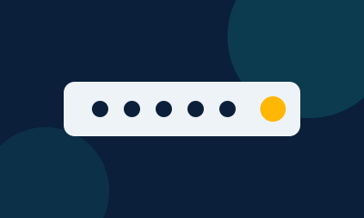
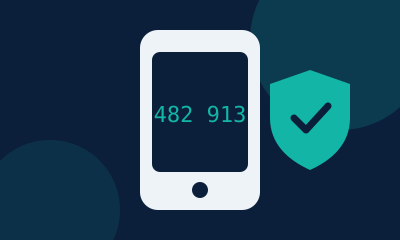
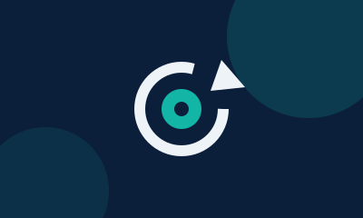
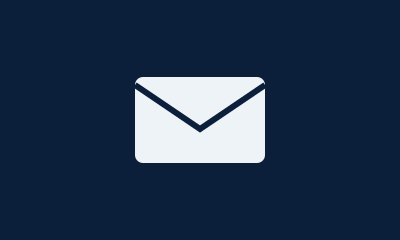

Strong passwords
Use a long passphrase and a different one for every account. A password manager remembers them for you.
Small steps that block most everyday attacks
Most online attacks do not break clever technical defences. They get in because of a weak password, an old app or one careless click. The good news is that a few simple habits make you a much harder target. You do not need to be a security expert to use them, and each one takes only a few minutes to set up. Even better, you can add them one at a time without changing how you normally use your phone or computer. Below are the four habits I think give the best protection for the least effort, so you can start with them today.

Use a long passphrase and a different one for every account. A password manager remembers them for you.

Turn on a second step, like a code from an app. Even if someone gets your password, they still cannot log in.

Updates fix security holes that attackers already know about. Switch on automatic updates and let them run.

Be careful with urgent messages and unknown links. Check the sender, and go to the website yourself instead.
Listen to this short reminder about checking links and protecting your accounts.
Transcript: Pause before clicking unexpected links. Check the sender address and watch for urgent requests. Never share your passwords or verification codes. If you are unsure, visit the organization website directly using a trusted bookmark.
Start with habit 2. Turning on two-factor login for your email account protects everything else, because email is how most other passwords get reset.